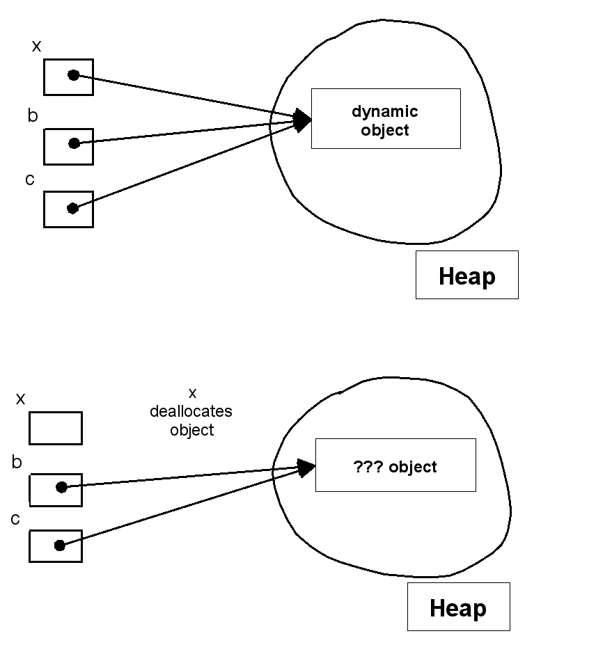
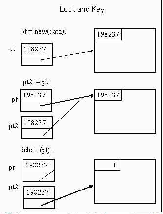

- It can be alias for an object
- All non-primitive types in Java are reference types
- C++ has reference type that is usually used for parameter passing
- pt and (*pt) are different!
Handling Pointer Problems
- Require Pointers to be typed
- Do not allow pointer arithmetic
- Make memory management the job of the language, NOT the job of the programmer
- Remember dangling pointers point to deallocated storage.
Dangling Pointer Problem

What can a
language's runtime support provide to help you do to avoid
Dangling
Pointers ?
- Never allow deallocation of memory.
- Creates lots of garbage
- Internally correct.
- Tombstone by Lomet (1975)
- Expensive in time and space
- Good side effect- easy to implement storage compaction
- Used by Macintosh OS for references to system objects such as files and window descriptors.

- Lock and Key by Fischer and LeBlanc 1977, 1980
- Lisp pioneered garbage collecting. Haskell, Ml, Lisp, and scheme (functional programming language) rely on garbage collectors.
- Object oriented language like Java, SmallTalk, Simula 67 and Eiffel also rely on garbage collectors for the reclamation of memory during execution.
- C++ is the notable exception. C++ retains the allocation and deallocation rules of C.
-
